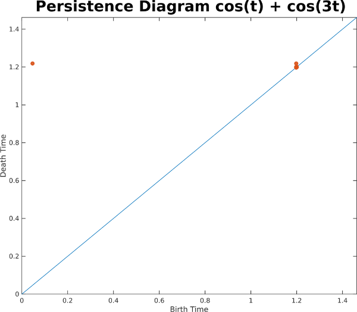
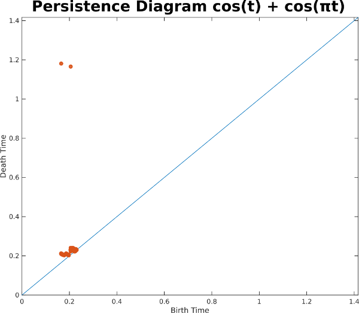

1D Sliding Windows
Before moving onto videos, a few prerequisites are needed on sliding windows of 1D time series. A sliding window of a 1D time series is a subset of a contiguous set of samples of the time series, each of which forms a dimension in a so-called phase space. As the starting point of the window is slid from left to right across the signal, points on a manifold are traced out in the embedding space. In the example below, we show a sliding window on a perfect 1D sinusoid, and we display 2D PCA of its sliding window embedding on the right, with a window length equal to the period:As you can see, the embedding lies on a circle, and 100% of the variance is captured in these two dimensions. When we add another sinusoid, however, the geometry gets much more complicated, as shown in the example below, with 3D PCA showing the geometry
In fact, 3 dimensions isn't enough to fully capture the geometry. In this example, 4 dimensions are needed. And in general for each additional sinusoidal component, an additional two dimensions are needed. In particular, each sinusoid contributes an independent ellipse, so the sliding window embeddings lie on hypertorri. So this example with two sinusoidal components lies on a subset of the 2-torus
Even though we can't visualize the geometry in 3 dimensions without loss, we can still use other high dimensional tools. In this case, we compute the one dimensional persistence diagram for the Rips filtration, which indicates the geometric strength of loops in a point cloud (see background). In this example, there is one strong class corresponding to the loop that this sliding window embedding completes over and over again on the 2-torus
Let's now look at another example with two sinusoids which are noncommensurate; that is, the ratio between their two periods is irrational. In this example the ratio is pi:
In this example, it appears that the sliding window embedding is filling out a surface instead of just a curve. In fact, if this went on forever, it would fill out the entire 2-torus in 4 dimensions. Indeed, the persistence diagram indicates two highly persistent 1D classes with early birth times.

What exactly is going on here? One way of explaining the difference is to look at the principal square of the 2 torus, and to plot the phase of one sinusoid on the x-axis and the phase of the other sinusoid on the y-axis. For the commensurate case sin(t) + sin(3t) after the longer period completes, the curve retraces the same exact path along the torus:
For the noncommensurate case, on the other hand, the path never retraces itself, so eventually the curve will fill the entire surface of the torus: